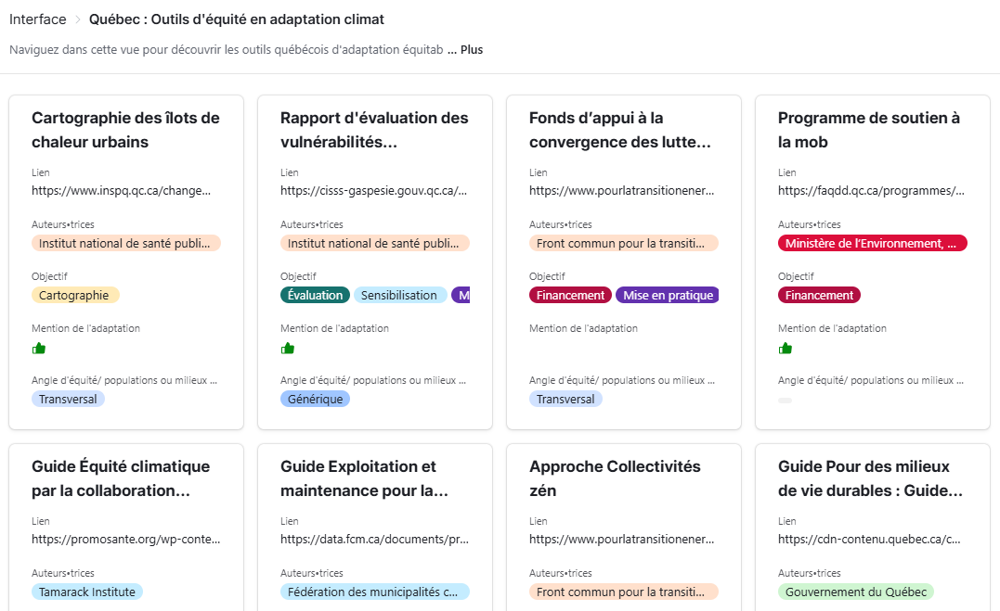

Agent de recherche
Labo Équité Climat
Outils d’équité en adaptation aux changements climatiques
Développer une boite contenant une diversité d’outils pour l’équité en adaptation afin d’offrir des outils permettant un dialogue authentique sur des sujets sensibles ainsi que des outils pouvant agir comme levier de changement.

À propos
Les mesures d'adaptation aux changements climatiques sont cruciales aujourd’hui et le seront dans le futur. À ce sujet, plusieurs groupes et chercheur·e·s s’inquiètent de l'exacerbation des inégalités induites par les solutions préconisées, une thématique encore trop peu étudiée et prise en considération. Par ailleurs, la littérature scientifique et des expériences de terrain montrent que des mesures d’adaptation peuvent engendrer ou exacerber des inégalités de différentes façons: distribution inégale de leurs effets (justice distributive), disparité des opportunités, des capacités et des effets de participer (justice procédurale), et reconnaissance lacunaire et inégale d’une diversité de savoirs, d’expériences et du croisement de différentes formes d’oppression et de discrimination. Plusieurs mettent de l’avant que des approches participatives et la diffusion de récits et témoignages issus de savoirs et expériences de personnes marginalisées ont un potentiel important pour mettre les enjeux d’équité plus au cœur des démarches d’adaptation. La proposition du Labo Équité Climat est de rassembler des savoirs et expériences variés pouvant nourrir la coproduction d’une Boîte à outils d’équité en adaptation aux changements climatiques afin de sensibiliser et d’appuyer les acteur·trice·s dans la conceptualisation et la mise en place de solutions d’adaptation justes.
Contribution
Constitution d'une base de données ayant pour objectif de recenser de manière non exhaustive et de visibiliser les outils existants en adaptation équitable aux changements climatiques. Elle permet à ses utilisateurs et utilisatrices de se familiariser avec l’existant, et de s’outiller pour leur propres démarches. En constante évolution, elle s’enrichit à mesure que de nouveaux outils émergent au Québec. Les outils répertoriés sont issus des connaissances des membres du comité conseil du Labo Équité Climat, de partenaires, de l’équipe ainsi que de recherche web.
Participation occasionnelle à l'animation du jeu sérieux